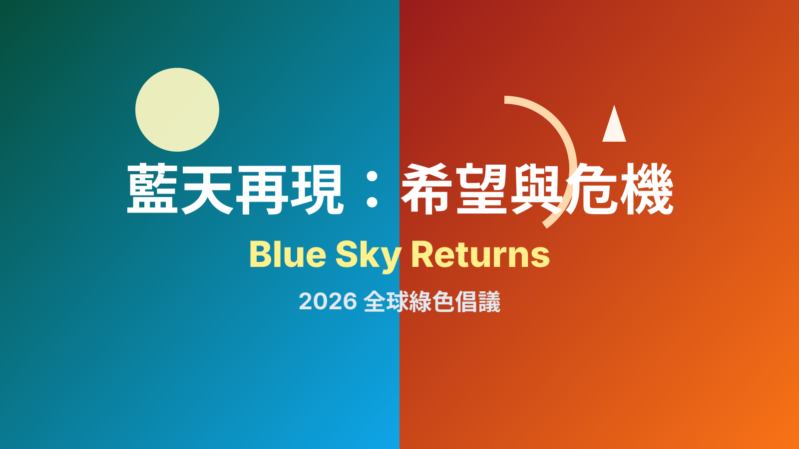

Blue Sky Returns: Hope and Crisis
藍天再現：希望與危機
2026 Global Green Initiative / 2026 全球綠色倡議
Project Visual / 專案視覺


2. Introduction: The Urgency and The Opportunity
專案簡介：迫切與轉機
2026 年，我們站在關鍵轉折點：危機已經抵達社區，解方也正在各地萌芽。JCI 夥伴的跨國協作，不只是分享故事，而是共同建立可複製、可教育、可行動的綠色路徑，讓「希望」成為下一代真正看得見的未來。
In 2026, we stand at a decisive turning point: the crisis is already impacting our communities, while solutions are emerging locally. Through JCI cross-border collaboration, we are not only sharing stories—we are building replicable, educational, and actionable green pathways so that “Hope” becomes a visible future for the next generation.
The Crisis: Climate Impacts (2024-2026)
危機：氣候影響
這就是我們各地正在面對的現實（以下為模擬案例，實際資料將由夥伴蒐集）：北方城市在非典型季節出現突發降雪，沿海地區遭遇更頻繁的滿潮倒灌與局部淹水，內陸都會則在夏季承受長時間熱浪與夜間高溫不退，農業區面臨乾旱與短時強降雨交替衝擊。危機不再是遠方新聞，而是每一個地區共同的現在進行式。
This is what our regions are facing (simulated examples; real data will be collected by partners): sudden out-of-season snowfall in northern cities, more frequent tidal backflow and localized flooding in coastal communities, prolonged heatwaves and elevated nighttime temperatures in inland urban zones, and alternating drought and intense short-duration rainfall in agricultural areas. The crisis is no longer distant news—it is a shared present across all regions.
The Hope: Green Facilities
希望：綠能設施
這就是我們希望你們捕捉的「希望」（以下為模擬案例）：校園與社區屋頂太陽能系統穩定供電，社區型微型風場支持公共設施減碳，綠建築透過通風、遮陽與節能設備降低能耗，再生能源站與儲能系統提升在地韌性。每一個可見的設施，都是讓公眾理解「轉型正在發生」的最佳教材。
This is the “Hope” we want you to capture (simulated examples): rooftop solar systems on schools and community facilities providing stable power, community-scale wind projects supporting low-carbon public services, green buildings reducing energy use through passive ventilation and efficient design, and renewable energy plants with storage systems strengthening local resilience. Every visible facility becomes practical proof that the transition is already happening.
5. Call for Collaboration: Participate in Hope and Crisis
合作徵件：參與希望與危機
我們誠邀各國姊妹會、分會與合作夥伴，以行動加入 2026 Blue Sky Returns 全球綠色倡議：
We invite sister chapters, local chapters, and partners worldwide to join the 2026 Blue Sky Returns Global Green Initiative through action:
- Film Green Facilities｜拍攝綠能設施： 製作 90–120 秒短片，呈現你所在地區最具代表性的綠色科技與減碳場景。 Create a 90–120 second video showcasing representative green technologies and decarbonization scenes in your region.
- Collect Climate Data｜整理氣候數據： 彙整 2024–2026 年具體氣候衝擊紀錄（溫度、降雨、海平面、災害影響等）。 Share specific climate impact records from 2024–2026 (temperature, rainfall, sea-level effects, and disaster impacts).
- Timeline｜時程： 專案啟動日為 2026 年 4 月 15 日，資料與影片提交截止為 2026 年 6 月。 Project launch: April 15, 2026. Submission deadline for data and videos: June 2026.
- Join Collaboration｜加入聯合宣傳： 透過 Instagram Collab 發布成果，擴大全球青年與社區影響力。 Use Instagram Collab to co-publish outcomes and amplify global youth and community impact.
專案目標：所有影片與資料將整合為《Countries & Regions: Hope and Crisis》國際電子書，並發送至各地中小學，作為環境與氣候教育教材，讓學生看見危機、理解解方、啟動行動。
Project Goal: All submitted videos and data will be compiled into the international e-book, Countries & Regions: Hope and Crisis, and delivered to local primary and secondary schools as environmental education material—helping students recognize the crisis, understand solutions, and take action.
6. Integration: Connect to Form
串接：表單
準備好把「希望」帶到你的城市與國家了嗎？請在下方填寫你的聯絡資料與合作意向，我們將立即發送完整徵件指南與提交流程。
Ready to bring Hope to your city and region? Leave your contact details and collaboration intent below, and we will send you the full submission guide and workflow immediately.
Go to Sign-up Form / 前往報名表單